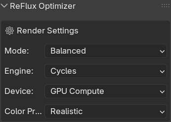
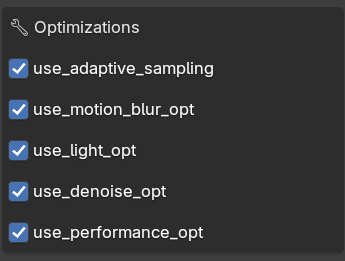
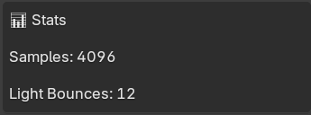
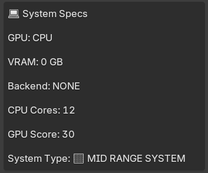
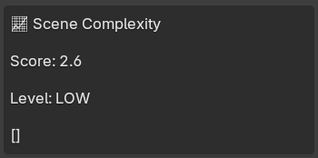
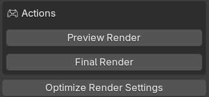

An addon for blender which faster ur render speed.
No more waste of time in tweaking every setting.
We provide you 3 different types of preset: Fast-> Balanced-> Quality, and a BONUS color grading preset (Realistic, Cinematic, Old Film, Neon, Flat) Time taken for render is accordingly to your specs but we alter the render settings to extract maximum output for your pc.
Try ReFlux
You can toggle on/off motion blur, lighting(light bounces,gloss,etc.). Our speacialised Adaptive Sampling alters the samples midway to match your pc power.
Try ReFlux
We give you stats of your project. These include current render samples and light bounces.
Try ReFlux
We detect your system specifications and display them accordingly. The system will categorize your pc as high, low and mid range system.
Try ReFlux
We provide you proper scence information including objects onscreen, their total polys and number of light sources used.
Try ReFlux
We calculate screen complexity and score them on the rank of 0-10. 0(low)->(10)very high.
Try ReFlux
You can get all the settings changed by one click "Optimize". You can also get a preview render before you sart your animation.
Try ReFlux
ReFlux is a Blender addon designed to make rendering faster and more efficient, especially on low-end PCs. It automatically tweaks and optimizes complex render settings that beginners often find confusing or hard to manage. Instead of manually experimenting with every option, ReFlux intelligently evaluates different settings and chooses the most efficient configuration for your scene. It reduces the need for trial-and-error by analyzing what works best for performance and quality, making heavy rendering tasks smoother, faster, and more beginner-friendly without sacrificing results.
Instead of wasting time adjusting settings, you can focus purely on creativity and output quality.
Download and install ReFlux into Blender in seconds.
Enable the addon and let it optimize your render settings.
Start rendering faster with better performance instantly.